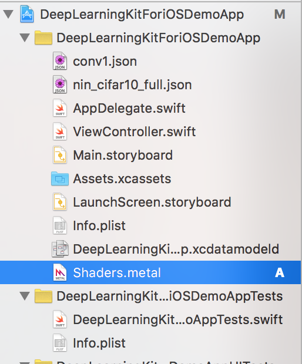

- Clone DeepLearningKit: git clone https://github.com/DeepLearningKit/DeepLearningKit.git

2. Open DeepLearningKitForiOSDemoApp.xcodeproj in xcode (e.g. from Finder)

3. Have a look at ViewController.swift – notice that import DeepLearningKitForiOS gives an error (in red)


4. Open Finder and Drag DeepLearningForiOS.xcodeproj over to the demo app in xcode
{kind=link}
5. Highlighted line below shows how the framework DeepLearningForiOS.xcodeproj can be included
{kind=link}
6. Click on app settings (highlighted line in left part of Xcode) and go the General tab on the right

7. Scroll down to embedded binaries in General tab and add DeepLearningKitforiOS.frameworkiOS

8. Result afterwards should look something like this – embedded binaries down to the right

9. Drag the Shaders.metal file from DeepLearningKitForiOS into top project
(not quite sure why this needs to be done, but anyway)
{kind=link}

10. Connect iPhone to your Mac (e.g. iPhone 6S), compile and run, should get something like this